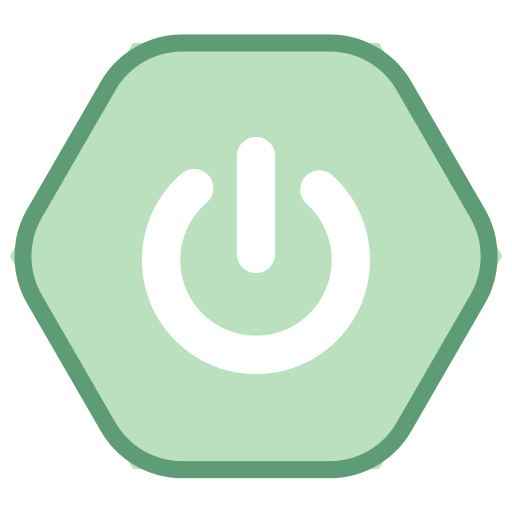
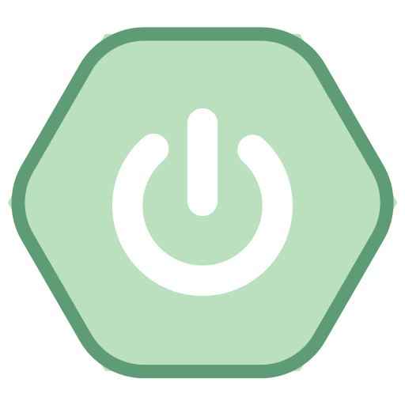
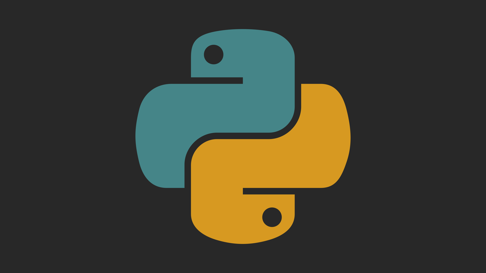
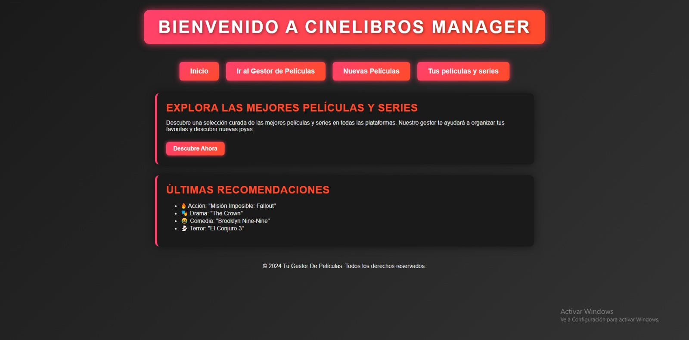
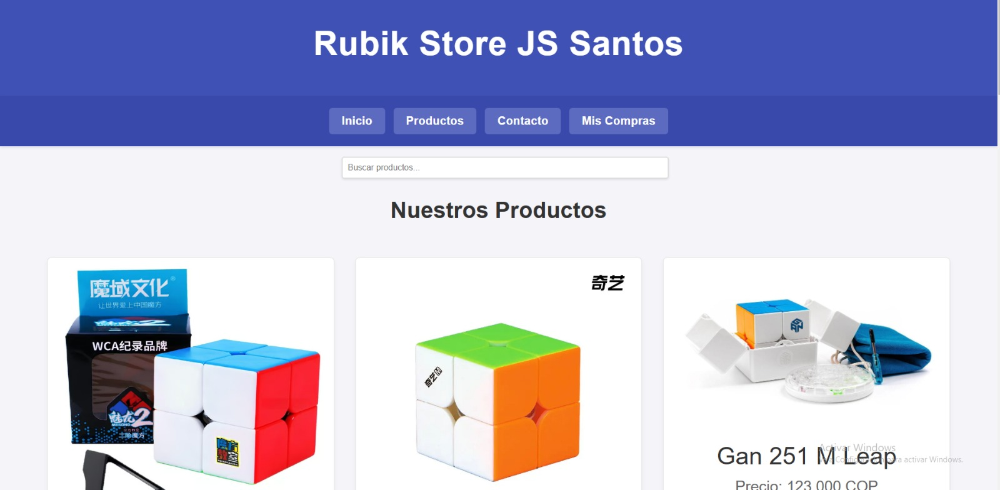
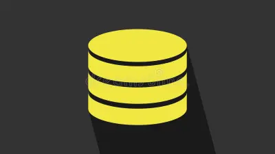
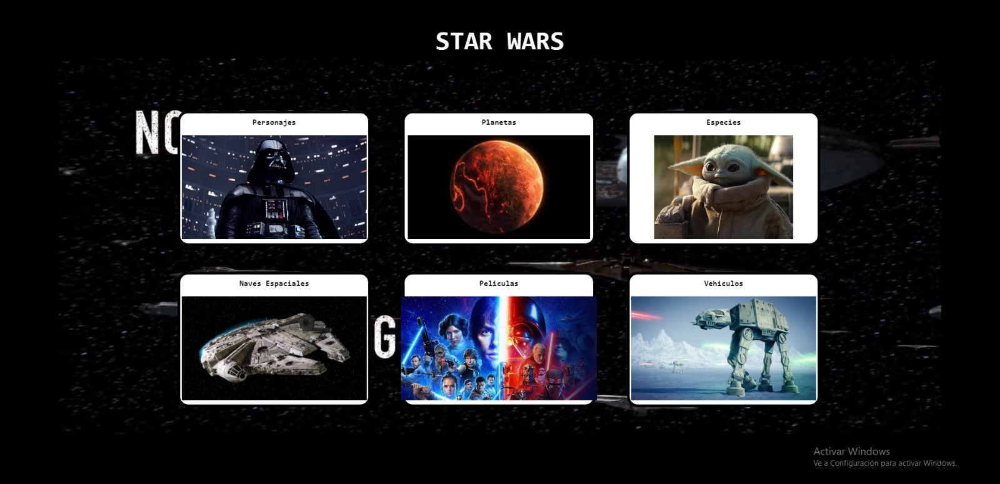
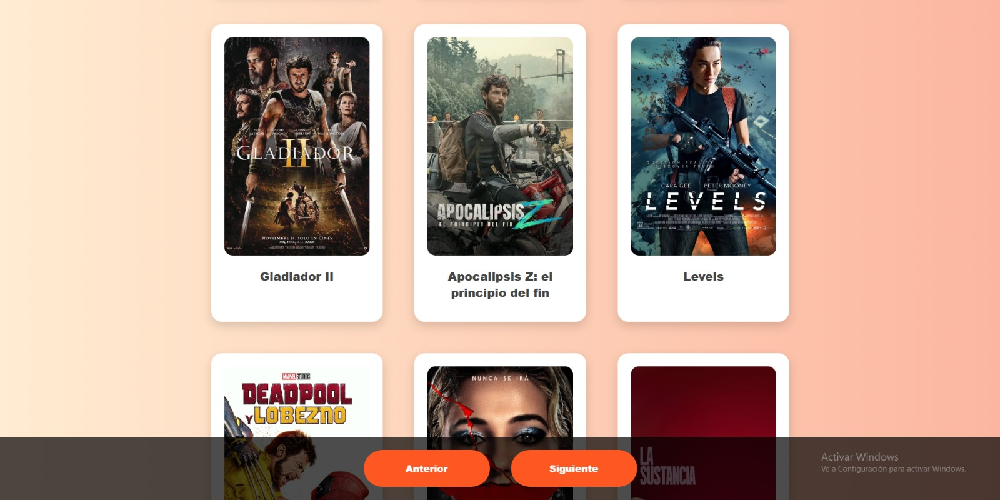

Sobre mí
Soy un desarrollador apasionado que disfruta resolver problemas y crear soluciones innovadoras. Con experiencia en tecnologías modernas, mi objetivo es entregar soluciones de calidad para problemas complejos.
Principalmente utilizo estas tecnologías
 

Proyectos





